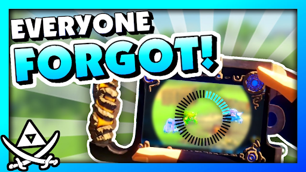
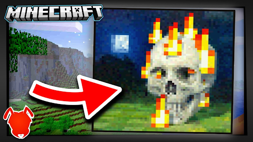

Nobody understands Youtube . . .
We could talk about it for hours and barely dent the iceberg.
The algorithm is complicated and it can take years to find success (trust me, I know). Yet, YouTubing IS a skill. And like all skills it can be sharpened with practice and knowledge.
Allow me to share a few of the tips that helped my channel stickout from the rest and pull ahead in the great rat race.
Disclaimer: Some of these tips will not fit your channel. That's alright. Use your judgement. You should ignore the tips which you believe are unhelp.
1. YouTube is a game…
…or, to be more specific, it is an MMO-RPG. You need to level up, gain skills, explore the Internet, and choose a class. Actually, let me show you what I mean...
THE BREAD PIRATE
Level 132,532 (20,135,865 XP)
Class: Video Gaming Channel
Sub-Class: Legend of Zelda Content
Skills:
- Editing Videos
- Writing Scripts
- Making Funny Voices
- Researching Zelda History
- Finding Memes
Equipment:
- Crappy Headphones
- Precious Wii U
- A +8 Year Old Snowball Microphone
- Frankenstein Desktop
- Speedy Laptop
- Davinci Resolve
- Paint Net
Party Members:
- Drakenwild
- Swack!
- Grazzy
- Yoshi (My Cat)
Weaknesses:
- Addicted to Civilization 6
- Slow at Editing
- No Girlfriend :(
These are my YouTube Channel Stats from 2023, but in video game terms!
Your Subscriber Count is your Level
Your Views are your XP
And your Genre is your Class (ie. instead of Fighter, Wizard, Rogue... you choose Vlogger, Gamer, Essayist)
YouTube isn't like a video game, it is a video game. Your goal is to level-up as much as possible, and you do that by crafting minions (videos) which collect XP (views) for you. And for approximately every 8-12 XP's you get, you gain one level (subscriber)
2. Luck ≠ Success
Many YouTubers will tell you that "you need to get lucky to be successful." But, this is a lie. This mindset will make you fail.
Consider the definition of luck:
luck
/lək/
Success or failure apparently brought by chance rather than through one's own actions.
Luck is random. It makes you feel helpless. Why would you rely on that?
Drill this into your mind instead: "Luck sucks."
You control more than you think! Your videos will be as successful as you make them.
You can improve your thumbnails, learn better editing, collaborate with other YouTubers, ask your friends and family to subscribe, and MORE.
You have control! Do not rely on luck!
But, if you DO get lucky, then don't waste the opportunity. Capitalize on it by making more videos.
Just don't rely on luck as your ONLY way to success.
3. Don't Be Entitled
You have as many subscribers as you deserve. If you’re not happy with it, then get better or be patient.
4. If You Want Views, Get People Curious
People click on videos for one of two reasons…
- They Need Something
- They Want Something
If people need your video, then you are making a tutorial. If people want your video, then you’re making entertainment. These two types of videos require two approaches.
When making a thumbnail for a “Want” Video you must focus on getting people curious.
- Ask a compelling question.
- Make a bold claim (the more outrageous it sounds the better)
- Show something strange (Ex. a video game glitch, or a strangely photoshopped image)
On the other hand, if you are making “Need” videos, I have no advice. I haven’t made many of those. You should study how other “Need” Youtubers are making videos if you want to learn more.
5. Be Attention Grabbing
Be attention-grabbing, but don’t use clickbait. Clickbait is when you lie or greatly exaggerate about the stuff in your video. Don’t do that.
You need to be honest in your thumbnail/title AND you need to spin your content in a way that gets people's attention.
You will find success when you do both.
6. Ask for criticism.
Find a friend or family member who watches a lot of social media, then ask them for BRUTALLY HONEST advice. Additionally, you can find other small Youtubers and make friends with them. That way you can critique each other's work.
Always.
Ask.
For.
Criticism.
It is one of the best ways to improve your content.
If your friend tells you “Your videos are too fast” then try slowing them down. If your dad says, “I don’t understand what your thumbnail is about” then try making it clearer.
Example: My sister doesn't play Zelda games or make YouTube videos, but her advice on thumbnails almost always helps me.
7. Study Successful Youtubers
Pay attention to the things your favorite Youtubers do. Then, replicate those things. It’s NOT stealing if you put your own twist on it.
Look at these two thumbnails…
 The one on the left is from me and the one on the right is from the Minecraft YouTuber named AntVenom. I liked his thumbnail style so I used it as inspiration.
- The Bread Pirate (2021)
8. Be Concise
Don’t waste the viewer’s time.
Slower or longers videos are fine! But never ramble. People appreciate when you are efficient with their time.
If your video is long, then make sure you are telling a good story. Always tell interesting things.
9. Make Thumbnails Understandable, Even When They are Small
When you are photoshopping a thumbnail, zoom out from time to time. Make your thumbnail look super teeny-tiny for a few seconds and then analyze it! That way you can see how your thumbnail looks on the Home Page.
Your thumbnail should be understandable even when it is tiny.
You can also test your thumbnail with this handy website. It shows you what your thumbnail will look like on YouTuber. I use it for all my thumbnails.
10. Always Give Credit
- When you use music in a video, credit the artist in the description of the video.
- When you use another YouTuber’s research, give them credit.
- When you’re scrolling through reddit and see a post that inspires you to make a video, give that redditor credit.
Your peers will appreciate the shoutout. You will avoid drama. Your viewers will see that you are genuine. It is a win-win.
Always give people credit.
11. Watch Out For Collaborative Channels
AKA: Channels that are run by multiple people at once.
They rarely work, especially when the collaborators already have personal channels. I’ve been a part of three separate collaborative channels. All but ONE of them died, and that’s because I took over the channel and turned it into The Bread Pirate. (Go to August 12th, 2017 on the Timeline to hear that story.)
12. Don’t Promise to Respond to Every Comment
Instead, say that you will "respond to as many comments as possible," or that you will reply to the first 50. Trust me on this one, you don't want to over promise. 😅
13. Expect NO Money
If you Youtube for the money… don’t.
Youtube is unpredictable. It takes years to gain the skills you need. The equipment is expensive. It's not worth it for the money.
Money also won't motivate you to push through the hard times. It will only discourage you further.
So, if you want to do Youtube, do for fun. That is your new starting point. Then… AND ONLY THEN... if you are good enough you might accidentally make money.
Don't become a Youtuber because you want to make a quick buck. You will be disappointed.
14. READ THIS Before You Buy Expensive Equipment!
Make sure you have fun making videos before you buy expensive computers, editing softwares, and cameras.
Instead, start with your phone or free editing software.
If you become a bigger Youtuber you will eventually need better tools. Just don’t worry about that until you are sure you have fun making videos.
(Imagine how embarassing it would be if you spent hundreds of dollars on equipment and then discovered you dislike YouTubing!)
The one exception might be a Capture Card. If you want to record footage directly from your gaming console then you will need one. My advice would be to start with the cheapest one possible and upgrade later.
15. * * * Think Like a Viewer! * * *
THIS IS CRITICAL!
Some people might even say it is the most important piece of advice.
When you make a video, think… “Would a viewer on YouTube be interested in this?” or better yet… “If I were scrolling through YouTube and saw my video would I click it?”
Chances are… no.
But that’s okay! I was able to fix my channel and so can you. Just be critical of yourself.
So, when a video gets fewer views than expected ask yourself...
Why would a viewer NOT want to click on this video?
And when a video has lower watch time ask yourself,
What made viewers leave this video?
The problem is NEVER the viewer. It is always you and your channel. I'm not being harsh. I am telling you the truth. And the sooner you accept the truth, the better.
16. Have Fun!
Like I mentioned in Tip #13: If you don’t have fun with YouTube, then you will get burnt out. Your content will also decline in quality.
That being said… You will still need to do some hard work. But if you find Youtube fun, then you will be able to push past the hard parts and find success.
That is the end of my tips.
Godspeed on your YouTube journey! Remember, YOU are your best teacher. Be self critical, work hard, and study successful YouTubers.
And ONE LAST TIP: Don’t make YouTube the center of your life. After all... it is just a game.
(Last Updated October 8, 2024)